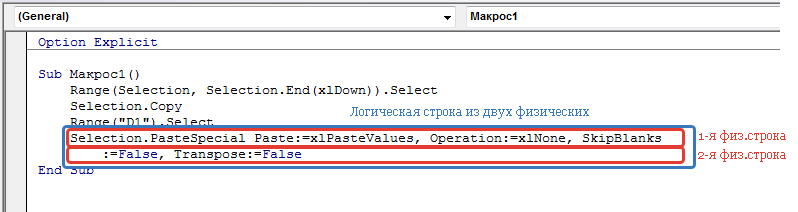
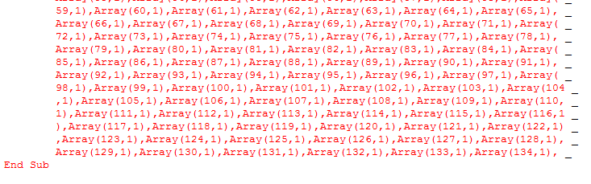

Tips_VBE_T2Cols.xls (62,5 KiB, 197 скачиваний)
Tips_VBE_T2Cols.xls (62,5 KiB, 197 скачиваний)Ошибка Too Many Line Continuations
В VBA ошибка Too Many Line Continuations весьма редкая, что делает её несколько экзотичной. И тем не менее, столкнуться с ней можно даже ничего не программируя, а просто при записи макроса.
Почему появляется ошибка Too Many Line Continuations
Прежде чем разобрать причину ошибки и способы её устранения, сначала неплохо бы немного теории. Предположу, что раз зашли на эту страницу - значит уже познакомились с макросами хотя бы поверхностно (если нет - статья в помощь: Что такое макрос и где его искать?). Т.к. макрос это код программы, значит этот код должен быть где-то записан. И записываются все коды в модулях (подробнее про модули: Что такое модуль? Какие бывают модули?). Помимо ограничений, накладываемых синтаксисом языка программирования (в данном случае это VBA), есть и иные ограничения - будем называть их физическими. К физическим ограничениям относятся:
Возможно я перечислил здесь не все физические ограничения - но для начальной теории и понимания разбираемой ошибки более чем достаточно.
Плюс пара терминов, которые нам пригодятся:
Начнем с очевидного: при написании кодов хоть и есть возможность записать в одну физическую строку кода до 1023 символов, на практике это ни фига не удобно. Т.к. прокручивание ползунка внизу окна редактора для просмотра всей строки никак не совпадает с представлениями о комфортной работе с текстом. Именно поэтому часто длинные логические строки кода разбиваются на несколько физических:

Для разбиения логической строки на несколько физических применяется специальный оператора разбиения, состоящий из последовательно записанных пробела и знака нижнего подчеркивания: " _". Они должны быть записаны именно так и именно в этой последовательности. При этом следует учитывать, что не в любом месте строки допускается делать переносы. Например, в приведенном выше коде можно разбить строку по каждому аргументу:
Selection.PasteSpecial Paste:=xlPasteValues, _ Operation:=xlNone, _ SkipBlanks:=False, _ Transpose:=False
|
1 2 3 4 |
Однако в коде есть специальный оператор, указывающий на принадлежность значения конкретному аргументу: :=. И этот оператор не допускается разбивать на строки. Такое разбиение вызовет ошибку синтаксиса и вся логическая строка будет подсвечена красным:
Selection.PasteSpecial Paste:=xlPasteValues, _
Operation: _
=xlNone, SkipBlanks:=False, Transpose:=False
Так же не допускается прямое разбиение текста в кавычках:
Range("D1 _
").Select
'
Range("D _
1").Select
В данном случае необходимо либо закрыть кавычки и не разбивать текст(в первом случае):
Range("D1" _
).Select
либо установить закрывающие кавычки для каждого фрагмента текста и объединить их специальным символом объединения текста(& - амперсандом):
Range("D" & _
"1").Select
И вот теперь, когда разобрались с тем как записываются строки и как их можно разбивать и какие ограничения накладываются на строки - совершенно не сложно догадаться, что означает ошибка Too Many Line Continuations. В дословном переводе - Слишком много линий продолжения. В нашем случае - слишком много физических строк внутри одной логической или слишком много операторов разбиения(" _"). Как мы помним - операторов не может быть более 24, а следовательно физических строк внутри одной логической не может быть более 25.
Как устранить ошибку?
Если ошибка возникла при написании кода самостоятельно - то здесь проблем возникнуть не должно. Можно ради работы кода пожертвовать удобством чтения в одной строке и просто убрать пару переносов на строки, объединив их в одну физическую:
'Вместо такой строки s = "1" & _ "2" & _ "3" & _ "4" & _ "5" 'записать так s = "1" & "2" & _ "3" & "4" & _ "5" 'хотя, конечно в данном конкретном случае правильнее так: s = "12" & _ "34" & _ "5"
|
1 2 3 4 5 6 7 8 9 10 11 12 13 14 |
Куда хуже, когда ошибка возникает при записи макроса. Да, такое тоже может быть. При этом совершенно очевидно, что больше смахивает на бред, но все же - макрорекордер очень любит разбивать логические строки на физические. При этом длина каждой физической строки едва дотягивает до 100 символов как правило. Конечно, в подавляющем большинстве случаев и этого за глаза хватает. Но бывают ведь и исключения. Например, если попытаться записать макрорекордером разбиение текста на столбцы(Данные -Текст по столбцам) примерно такого текста(просто 200 раз повторяется "текст "):
текст текст текст текст текст текст текст текст текст текст текст текст текст текст текст текст текст текст текст текст текст текст текст текст текст текст текст текст текст текст текст текст текст текст текст текст текст текст текст текст текст текст текст текст текст текст текст текст текст текст текст текст текст текст текст текст текст текст текст текст текст текст текст текст текст текст текст текст текст текст текст текст текст текст текст текст текст текст текст текст текст текст текст текст текст текст текст текст текст текст текст текст текст текст текст текст текст текст текст текст текст текст текст текст текст текст текст текст текст текст текст текст текст текст текст текст текст текст текст текст текст текст текст текст текст текст текст текст текст текст текст текст текст текст текст текст текст текст текст текст текст текст текст текст текст текст текст текст текст текст текст текст текст текст текст текст текст текст текст текст текст текст текст текст текст текст текст текст текст текст текст текст текст текст текст текст текст текст текст текст текст текст текст текст текст текст текст текст текст текст текст текст текст текст текст текст текст текст текст текст
применив в качестве разделителя пробел, то практически 100% получим ошибку Too Many Line Continuations и при этом код будет записан не полностью и оборвется на какой-то строке. У меня, например, кода хватило лишь для назначения формата 134 слову:

Вот в этом случае не остается ничего другого, как разбивать текст в ячейках на блоки. По сути самым оптимальным на мой взгляд будет посмотреть на каком фрагменте завершилась запись(в моем случае на Array(133,1),Array(134,1),) и попробовать разделить текст на блоки так, чтобы каждый блок содержал менее 130 фрагментов текста итоговых данных. Т.к. макрос записывался с целью автоматизации, то в данном случае очевидно, что записывался он с целью избавиться от ручных преобразований. А значит разбивать такой текст на блоки представляется не целесообразным и надо придумывать как все же все это автоматизировать. И здесь лучше уж перебдить и тем же макросом сначала перенести данные на другой лист, там кодом раскидать данные на части в разные столбцы и после этого на другой лист по очереди выгружать каждый из разбитых столбцов. Понимаю, что из такого пояснения даже посвященный не сильно поймет задумку, что уж говорить о начинающих. Поэтому в статье привожу пример такого кода, который также приложен файлом к статье. Код берет выделенный текст, определяет количество фрагментов для разбиения и если их больше 100 - разбивает кодом без всяких ошибок.
'--------------------------------------------------------------------------------------- ' Author : The_Prist(Щербаков Дмитрий) ' Профессиональная разработка приложений для MS Office любой сложности ' Проведение тренингов по MS Excel ' http://www.excel-vba.ru ' WebMoney - R298726502453; Яндекс.Деньги - 41001332272872 ' Purpose: http://www.excel-vba.ru/chto-umeet-excel/oshibka-too-many-line-continuations/ '--------------------------------------------------------------------------------------- Sub T2Cols() Const sDelim As String = " " 'разделитель текста Const lLIMIT_DelimCnt As Long = 100 'максимальное кол-во фрагментов в блоке Dim aFieldInfo 'массив назначения типов Dim ws As Worksheet, wsres As Worksheet Dim asSp, iTmpLen As Long Dim rTxt As Range, arr, aBreak, aTmp, aFTmp Dim lDelimCnt As Long, lMaxDelimCnt As Long, lMaxBreaks As Long Dim lr As Long, lt As Long, lc As Long, lcc As Long Dim s As String 'берем только первый столбец выделенного текста Set rTxt = Selection.Columns(1) 'отсекаем ячейки в конце столбца, не содержащие данных Set rTxt = Intersect(rTxt.Parent.UsedRange, rTxt) If rTxt Is Nothing Then Exit Sub Application.ScreenUpdating = 0 arr = rTxt.Value If Not IsArray(arr) Then ReDim arr(1 To 1, 1 To 1) arr(1, 1) = rTxt.Value End If 'определяем максимальное кол-во разделителей во всем диапазоне For lr = 1 To UBound(arr, 1) s = arr(lr, 1) If Len(s) Then lDelimCnt = Len(s) - Len(Replace(s, sDelim, "")) If lMaxDelimCnt < lDelimCnt Then lMaxDelimCnt = lDelimCnt End If End If Next 'максимальное кол-во блоков текста lMaxBreaks = Application.RoundUp(lMaxDelimCnt / lLIMIT_DelimCnt, 0) + 1 'создаем массив блоков текста для дальнейшего разбиения стандартными средствами If lMaxDelimCnt > lLIMIT_DelimCnt Then ReDim aBreak(1 To UBound(arr, 1), 1 To lMaxBreaks) ReDim aFieldInfo(1 To lMaxBreaks) For lr = 1 To UBound(arr, 1) s = arr(lr, 1) If Len(s) Then asSp = Split(s, sDelim) lcc = 0 For lc = 0 To UBound(asSp) Step lLIMIT_DelimCnt lcc = lcc + 1 If (UBound(asSp) - (lc)) < lLIMIT_DelimCnt Then iTmpLen = UBound(asSp) - lc Else iTmpLen = lLIMIT_DelimCnt - 1 End If ReDim aTmp(iTmpLen) ReDim aFTmp(iTmpLen) For lt = lc To lc + iTmpLen aTmp(lt - lc) = asSp(lt) aFTmp(lt - lc) = Array(1, 1) 'Array(1, 2) - если на выходе нужны текстовые значения Next aBreak(lr, lcc) = Join(aTmp, sDelim) & sDelim aFieldInfo(lcc) = aFTmp Next End If Next Else MsgBox "Данные можно разбить стандартными средствами: Данные -Текст по столбцам", vbInformation, "www.excel-vba.ru" Exit Sub End If 'Создаем лист Set ws = Worksheets.Add ws.Name = "tmp" 'записываем на временный лист все разбитые на блоки по 100 столбцы ws.Cells(1, 1).Resize(UBound(aBreak, 1), UBound(aBreak, 2)).Value = aBreak 'цикл по каждому столбцу, его копирование на результирующий лист и разбиение по разделителю(Пробел - Space:=True) 'если этот цикл не нужен и планируется вручную назначать столбцам параметры 'удалить все, что между чертой =========== '=============================================================================== Set wsres = Worksheets.Add wsres.Name = "result" For lc = 1 To UBound(aBreak, 2) lcc = wsres.Cells(1, wsres.Columns.Count).End(xlToLeft).Column + 1 aFTmp = aFieldInfo(lc) ws.Columns(lc).Copy wsres.Cells(1, lcc) 'Эта часть разбивает помещенный на листы текст wsres.Columns(lcc).TextToColumns Destination:=wsres.Cells(1, lcc), DataType:=xlDelimited, _ TextQualifier:=xlDoubleQuote, ConsecutiveDelimiter:=True, Tab:=False, _ Semicolon:=False, Comma:=False, Space:=True, Other:=False, FieldInfo _ :=aFTmp, TrailingMinusNumbers:=True Next Application.DisplayAlerts = False ws.Delete Application.DisplayAlerts = True wsres.Select '=============================================================================== Application.ScreenUpdating = 1 MsgBox "Данные обработаны", vbInformation, "www.excel-vba.ru" End Sub
Скачать файл с кодом и примером данных:
Tips_VBE_T2Cols.xls (62,5 KiB, 197 скачиваний)